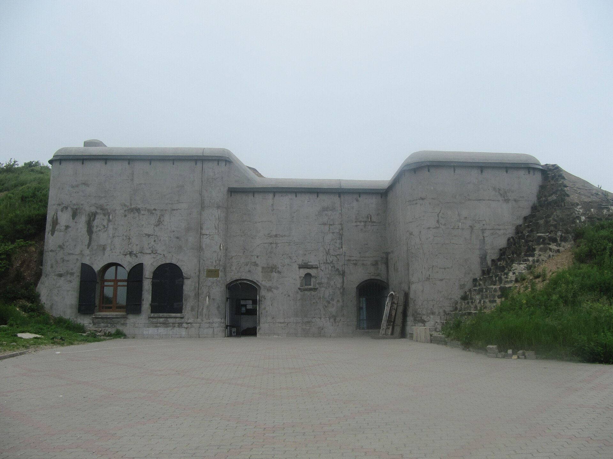

Форт Поспелова
Северо-восток острова, Сапёрный полуостров. Форт держал подступы, с которых город можно было бы обстреливать прямой наводкой.
День 04 из 10
Военный день на Русском: Новосильцевская батарея, форт Поспелова и мыс Тобизина. Машина или трансфер нужны с утра, пешком остров не обойти.
Северо-восток острова, Сапёрный полуостров. Форт держал подступы, с которых город можно было бы обстреливать прямой наводкой.
Мыс Новосильского, у восточного выхода к мосту. Батарея № 375 строилась на рубеже XIX–XX веков для прикрытия рейда. На мысу обрывы: идти только по тропе и в сухую обувь.
Южная оконечность Русского. Скалы, птицы, открытое Японское море. После бетона батареи это другой масштаб — просто берег.
Владивосток объявили крепостью в 1889 году. На сопках полуострова Муравьёва-Амурского и на островах выросла система фортов и береговых батарей, одна из крупнейших морских крепостей империи. Большая война её не осаждала. Сила укрепления в том, что оно меняло чужие расчёты ещё до выстрела.
Форт Поспелова стоит на Русском и закрывает Сапёрный полуостров. По музейному описанию, его задача — не пустить противника туда, откуда простреливается сам город, и прикрыть соседние береговые батареи. Бетон, казематы, потерны. Это не декорация: форт почти не перестраивали, поэтому читается первоначальный инженерный замысел.
Новосильцевская батарея — на мысе Новосильского. Имя мысу дал гидрограф Василий Бабкин в 1862 году, в честь мичмана Новосильского. Батарея прикрывала Скрыплёвский рейд и восточный вход на внутренний рейд. Дорога к ней проходит мимо форта, поэтому утро и день складываются в один переезд, а не в два разных выезда.
Мыс Тобизина оставляйте на светлый хвост дня. Тропа идёт вдоль обрывов, на юге открывается море уже без городских кранов. После трёх часов бетона это необходимая пауза. Обратно в город — по Русскому мосту, который в первый день был экспонатом, а сегодня просто дорога домой.
Пятый день снова морской, но дальше от города: острова Рикорда и Желтухина, а вечером — театр.
